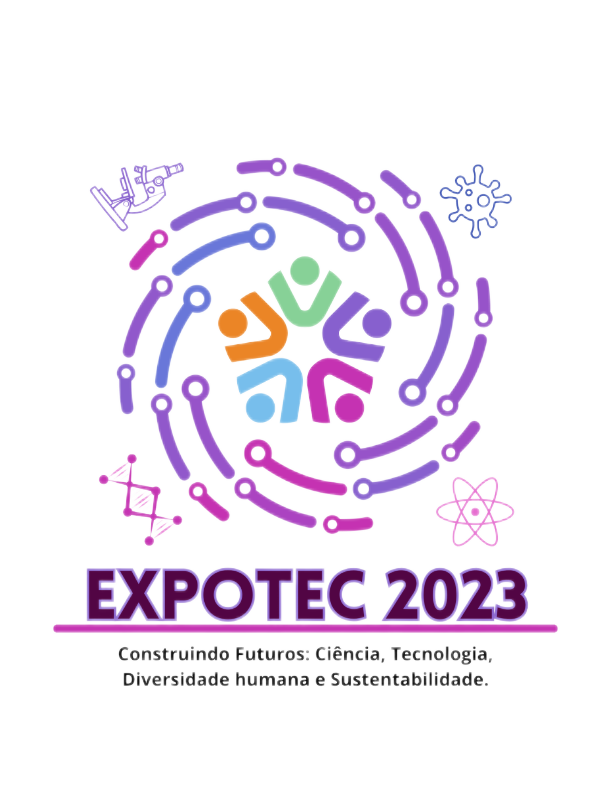

INSTITUTO FEDERAL
Rio Grande do Norte

SOBRE
A Expotec é uma feira de tecnologia e inovação realizada pelo Instituto Federal de Educação, Ciência e Tecnologia do Rio Grande do Norte (IFRN)
e é um evento voltado para a divulgação e promoção da tecnologia, ciência e inovação.
O IFRN é uma instituição de ensino que oferece cursos técnicos e superiores, incluindo cursos de tecnologia e engenharia. A Expotec é uma oportunidade para os alunos, professores e pesquisadores do IFRN e de outras instituições apresentarem projetos, pesquisas e inovações tecnológicas que estão desenvolvendo.
O evento geralmente inclui apresentações, palestras, exposições de projetos, competições, workshops e atividades relacionadas à ciência e tecnologia. A Expotec tem como objetivo estimular o interesse pela tecnologia, incentivar a pesquisa e a inovação, e promover a interação entre estudantes, professores, profissionais da área e o público em geral.